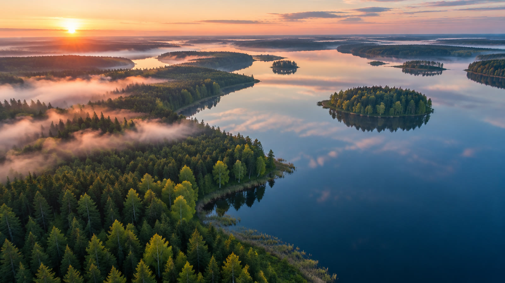
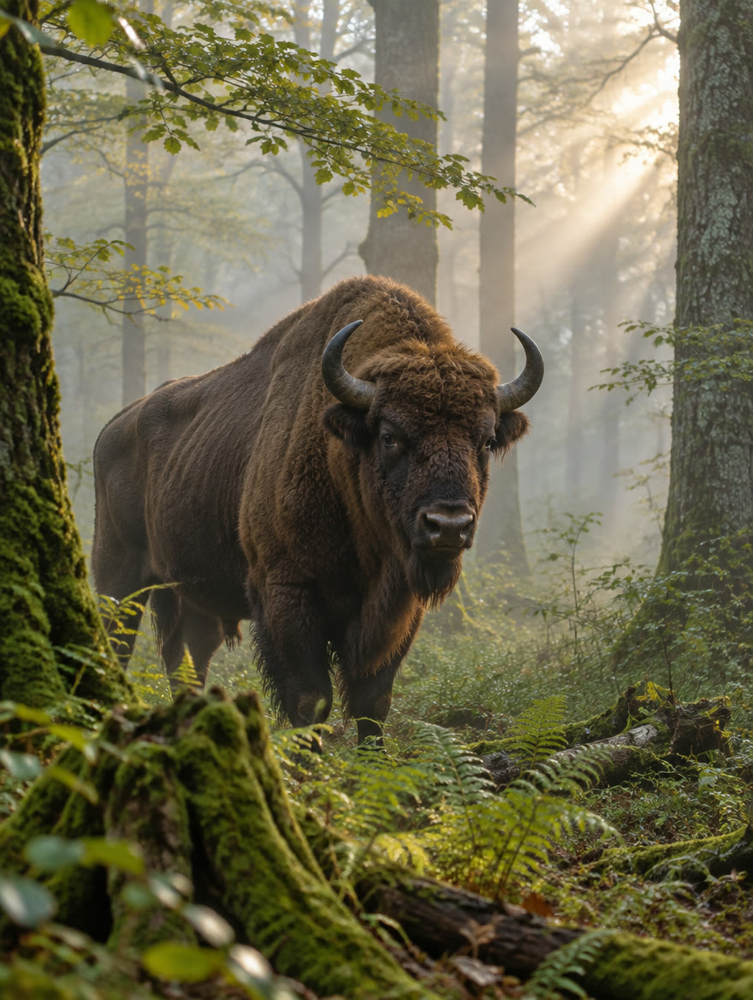
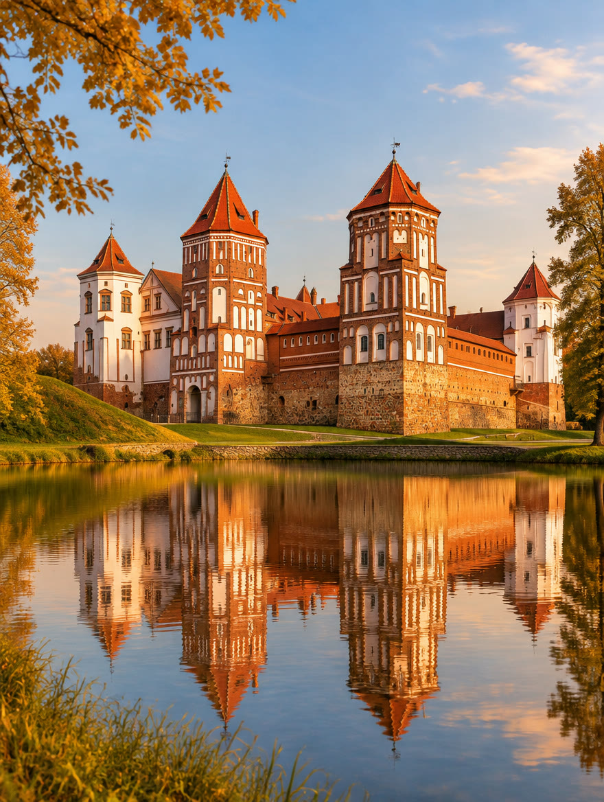
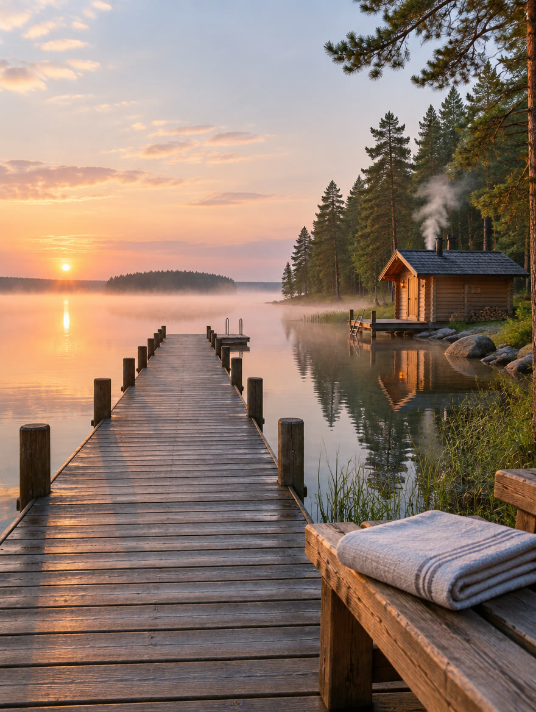
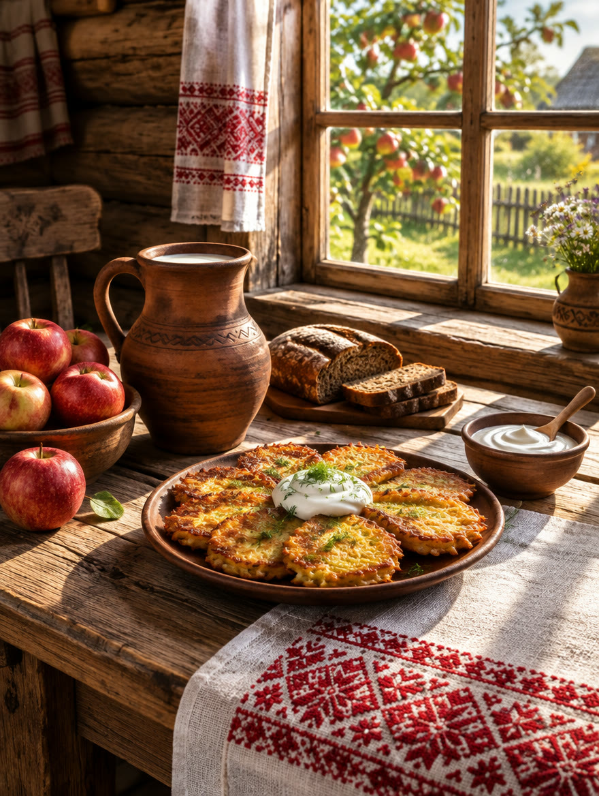
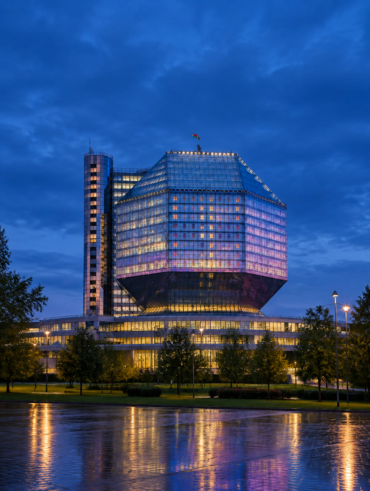
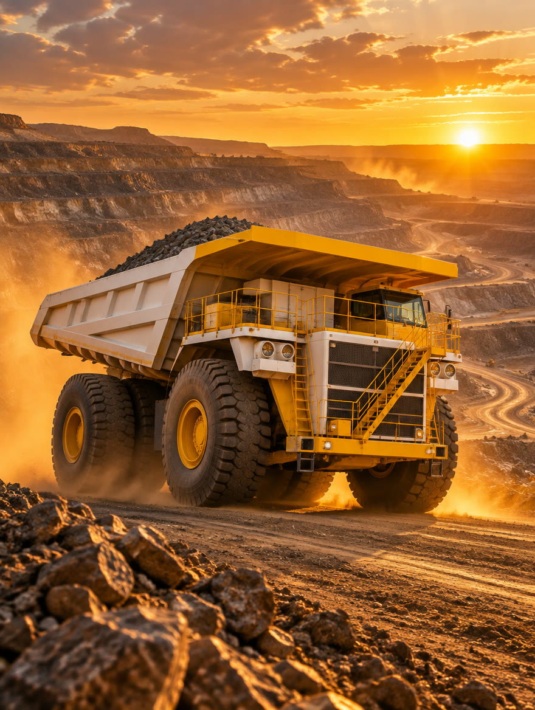
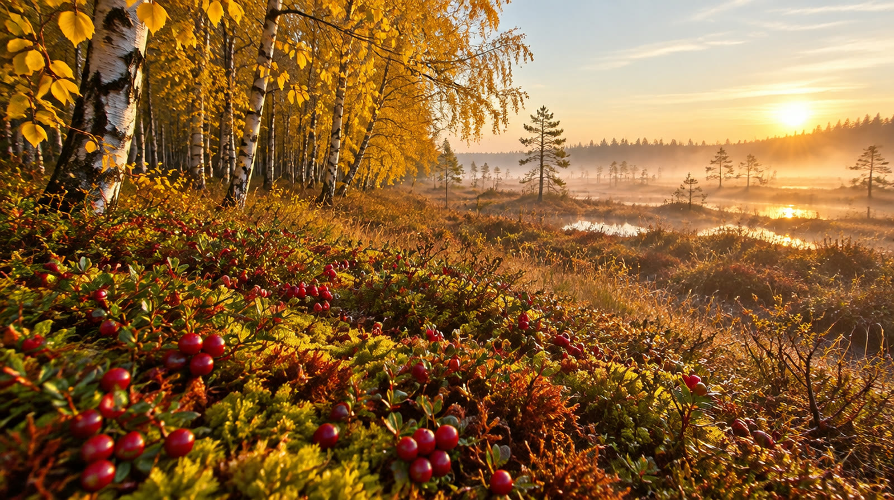
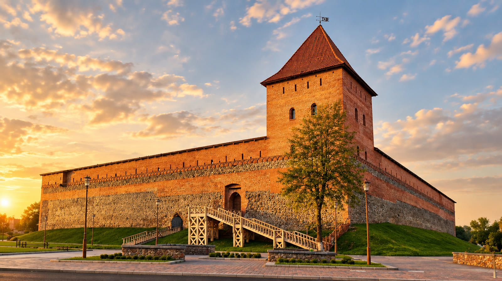

Беларусь. Время дышать.
* рабочий слоган — до итогов конкурса брендаТысячи озёр, пуща с зубрами и замки из списка ЮНЕСКО — в паре часов дороги от Минска.
Какой будет ваша поездка?
Выберите настроение — подскажем места, маршруты и лучший сезон.

Природа и озёра
Пуща, Нарочь, Браслав, Полесье. Тишина, которую слышно.
Беловежская пуща · ≈ 360 км
Замки и история
Мир, Несвиж, Новогрудок, Лида. Четыре объекта ЮНЕСКО.
Мирский замок · ≈ 95 км
Здоровье
Санатории у озёр и сосновых лесов, баня и неспешный ритм.
Нарочь · ≈ 150 км
Деревня и вкус
Агроусадьбы, драники со сметаной, гастрофесты и сады.
1 441 агроусадьба по всей стране
Город и события
Минск, Витебск, Гродно: театры, фестивали, вечерние набережные.
Национальная библиотека · Минск
Индустрия и техника
Карьерные гиганты, заводские экскурсии и индустриальные парки.
Жодино · ≈ 50 км
Сейчас в Беларуси — золотая осень
Клюква на болотах, туман над озёрами и премьеры нового театрального сезона.
- 30.10 — 06.11«Лістапад»Минский международный кинофестиваль · Минск
- 21.11100 лет театру имени Якуба КоласаЮбилейный сезон · Витебск
- 19 — 20.12Рождественский оперный форумПремьера «Итальянки в Алжире» · Большой театр, Минск
- ЗимаПоместье Деда МорозаСказочный сезон · Беловежская пуща
Из Минска — на выходные
Нажмите на точку: расстояние по дороге от столицы, примерно.
≈ км по дороге от Минска. Точки — по реальным координатам.

2027
Лида — туристическая столица СНГ
Замок XIV века, фестивали и целый год событий. Минск в 2027-м — молодёжная столица Содружества, Молодечно — культурная.
Узнать о программе первымКак приехать
Главное о въезде и дороге — коротко. Подробности и визовый помощник — в один клик.
Без визы до 30 дней
Для граждан многих стран — при въезде через аэропорты. С Китаем действует взаимный безвизовый режим.
Прямые рейсы
Минск связан прямыми рейсами с Пекином, Урумчи, Сианем и Санья, а также с городами СНГ.
Электронная виза
Если безвиз вам не подходит — электронную визу можно оформить онлайн.
Условия въезда — на октябрь 2026. Блок обновляется автоматически при изменении правил.